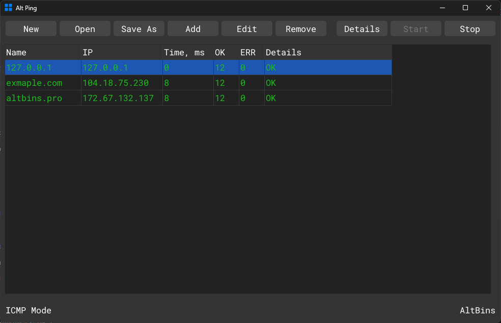

AltPing
Network ping utility with latency stats
Description
AltPing is a small GUI app for checking whether a list of hosts is reachable. Add hosts by name or IP and it pings each one every second, showing the ping time and the loss, average and maximum over the last 5 minutes. A chart shows the history of the last 24 hours. You can keep several host lists and switch between them quickly, and every action has a keyboard shortcut.
Download
wget -qO- https://github.com/ipoluianov/altping/releases/latest/download/linux-x64-install.sh | bash
Features
- Open Source
- No dependencies
- Single executable file
- ICMP/UDP
- Configurable host lists
- Keyboard shortcuts
Screenshots

What it does
Checks hosts non-stop
Pings every host again and again and shows how fast it answers, in milliseconds.
Status at a glance
The window title and bottom line show how many hosts are OK, slow, or down.
Remembers downtime
Keeps a log of when each host stopped answering and for how long.
Can check a port too
Instead of a ping, it can test if a specific port on a host is open.
Warns you
A beep or a desktop notification when a host goes down or comes back.
Keeps working in the tray
Minimize the window and it keeps checking hosts in the background.
Saves history to a file
Export a host's ping history to a CSV file for later.
Shares a host online
Publish one host's live ping time to a public page you can send to anyone.
Speaks your language
Available in 12 languages, with a light or dark look.